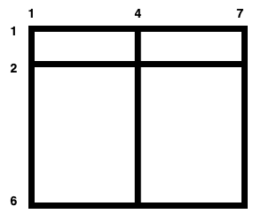

| Category | Difficulty | Likes | Dislikes |
|---|---|---|---|
| Algorithms | Medium | 151 | 119 |
There is a large (m - 1) x (n - 1) rectangular field with corners at (1, 1) and (m, n) containing some horizontal and vertical fences given in arrays hFences and vFences respectively.
Horizontal fences are from the coordinates (hFences[i], 1) to (hFences[i], n) and vertical fences are from the coordinates (1, vFences[i]) to (m, vFences[i]).
Return the maximum area of a square field that can be formed by removing some fences (possibly none) or -1 if it is impossible to make a square field.
Since the answer may be large, return it modulo 109 + 7.
Note: The field is surrounded by two horizontal fences from the coordinates (1, 1) to (1, n) and (m, 1) to (m, n) and two vertical fences from the coordinates (1, 1) to (m, 1) and (1, n) to (m, n). These fences cannot be removed.
Example 1:
Input: m = 4, n = 3, hFences = [2,3], vFences = [2]
Output: 4
Explanation: Removing the horizontal fence at 2 and the vertical fence at 2 will give a square field of area 4.Example 2:

Input: m = 6, n = 7, hFences = [2], vFences = [4]
Output: -1
Explanation: It can be proved that there is no way to create a square field by removing fences.
Constraints:
3 <= m, n <= 1091 <= hFences.length, vFences.length <= 6001 < hFences[i] < m1 < vFences[i] < nhFences and vFences are unique.